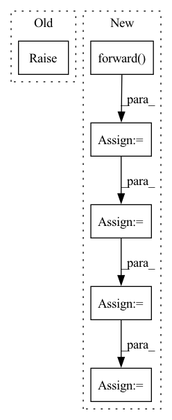

Pattern ID :18715
Before Change
:param batch_idx: the index of the batch
:return loss: (1,); the train_loss for this batch
raise NotImplementedError
def forward(self, X: torch.Tensor) -> torch.Tensor:
After Change
def training_step(self, batch: Tuple[torch.Tensor, torch.Tensor], batch_idx: int) -> dict:
X, y = batch
H_all = self.forward( X) // (N, 3, L) -> (N, L, H)
S_wisdom = self.S_wisdom(H_all) // (N, L, H) -> (N, |W|)
loss = F.cross_entropy(S_wisdom, y) // (N, |W|), (N,) -> (N,)
loss = loss.sum() // (N,) -> (1,)
P_wisdom = F.softmax(S_wisdom, dim=1) // (N, |W|) -> (N, |W|)
self.rd_metric.update(preds=P_wisdom, targets=y)
median, var, top1, top10, top100 = self.rd_metric.compute()In pattern: SUPERPATTERN
Frequency: 4
Non-data size: 6
Instances Fragment ID: 60915457
Project Name: eubinecto/wisdomify
Commit Name: bb66a843111e861b36bb8b32127c63054566f542
Time: 2021-10-02
Author: eubinecto
File Name: wisdomify/rds.py
M Class Name: RD
N Class Name: RD
M Method Name: training_step(3)
N Method Name: training_step(3)
M Parent Class: pl.LightningModule
N Parent Class: pl.LightningModule
M File Name: wisdomify/rds.py
N File Name: wisdomify/rds.py
M Start Line: 51
M End Line: 51
N Start Line: 51
N End Line: 66
Before Change
:return: H_all_t: (N, L, H)
// TODO - residual connection, layer norm.
raise NotImplementedError
class Decoder(torch.nn.Module):After Change
:param attention_mask: (L,)
:return: H_x (as-is), H_y (updated), attention_mask (as-is)
Out_ = self.masked_multi_head_self_attention_layer\
.forward(H_q=H_y, H_k=H_y, H_v=H_y) + H_y
Out_ = self.norm_1(Out_)
Out_ = self.multi_head_encoder_decoder_attention_layer.forward(H_q=Out_, H_k=H_x, H_v=H_x) + Out_
Out_ = self.norm_2(Out_)
Out_ = self.ffn(Out_)
Out = self.norm_3(Out_) // H_y updated
return H_x, Out, attention_mask
Fragment ID: 60915379
Project Name: eubinecto/dekorde
Commit Name: 6cd311d7d3499fce627b620b64629ef7734776b0
Time: 2021-10-08
Author: eubinecto
File Name: dekorde/components/decoder.py
M Class Name: DecoderLayer
N Class Name: DecoderLayer
M Method Name: forward(4)
N Method Name: forward(4)
M Parent Class: torch.nn.Module
N Parent Class: torch.nn.Module
M File Name: dekorde/components/decoder.py
N File Name: dekorde/components/decoder.py
M Start Line: 21
M End Line: 29
N Start Line: 19
N End Line: 34
Before Change
:return: H_all_x: (N, L, H)
// TODO - residual connection, layer norm.
raise NotImplementedError
class Encoder(torch.nn.Module):After Change
:param H_x: (N, L, H), or (N, L, E) if this layer is the first layer.
:return: H_x: (N, L, H)
Out_ = self.multi_head_self_attention_layer.forward(H_q=H_x, H_k=H_x, H_v=H_x) + H_x
Out_ = self.norm_1(Out_)
Out_ = self.ffn(Out_) + Out_
Out = self.norm_2(Out_) // this is the new H_x
return Out // updated
Fragment ID: 60915125
Project Name: eubinecto/dekorde
Commit Name: 6cd311d7d3499fce627b620b64629ef7734776b0
Time: 2021-10-08
Author: eubinecto
File Name: dekorde/components/encoder.py
M Class Name: EncoderLayer
N Class Name: EncoderLayer
M Method Name: forward(2)
N Method Name: forward(2)
M Parent Class: torch.nn.Module
N Parent Class: torch.nn.Module
M File Name: dekorde/components/encoder.py
N File Name: dekorde/components/encoder.py
M Start Line: 23
M End Line: 23
N Start Line: 20
N End Line: 24